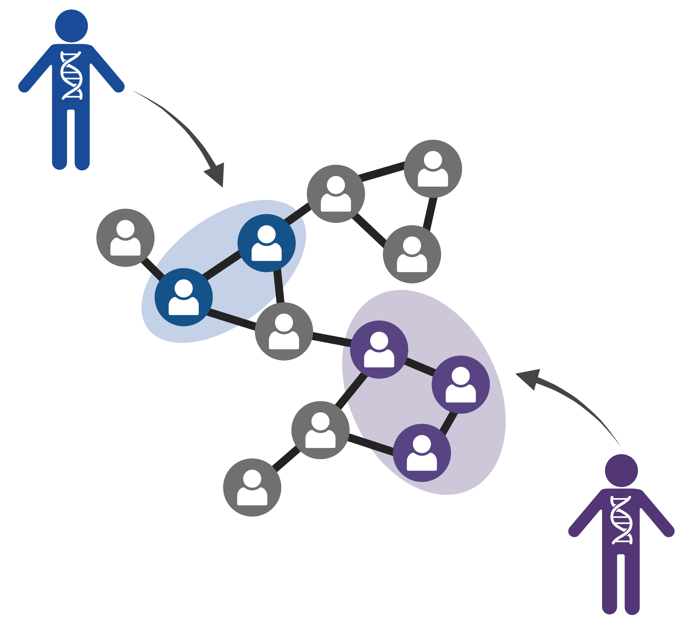
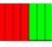
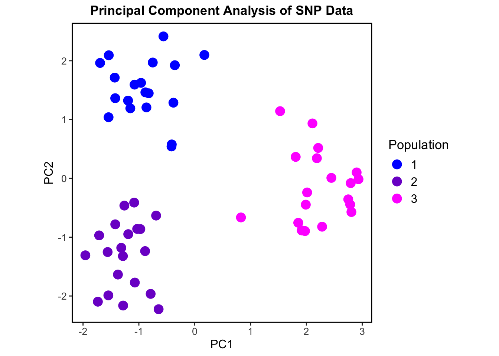
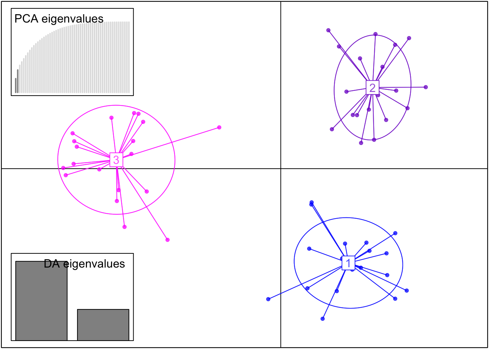
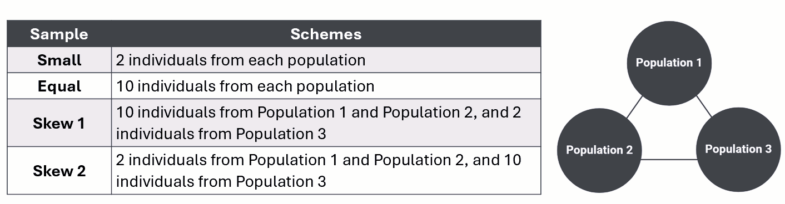
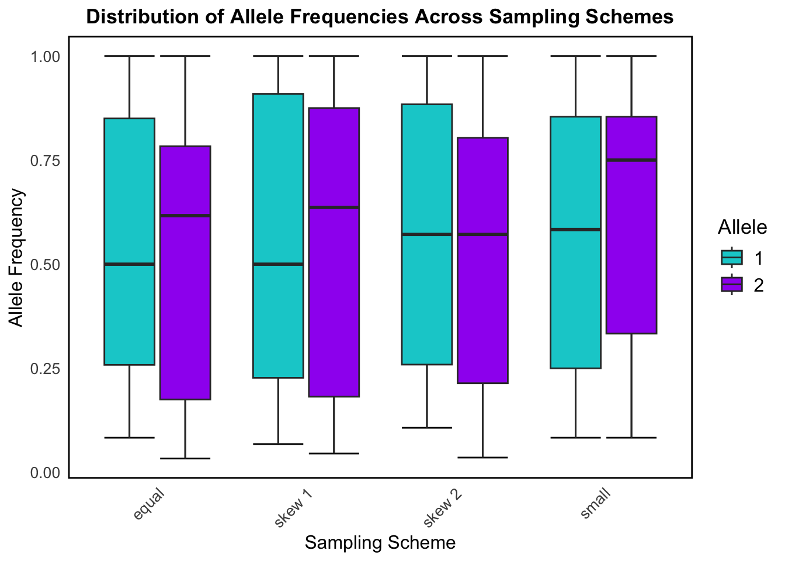
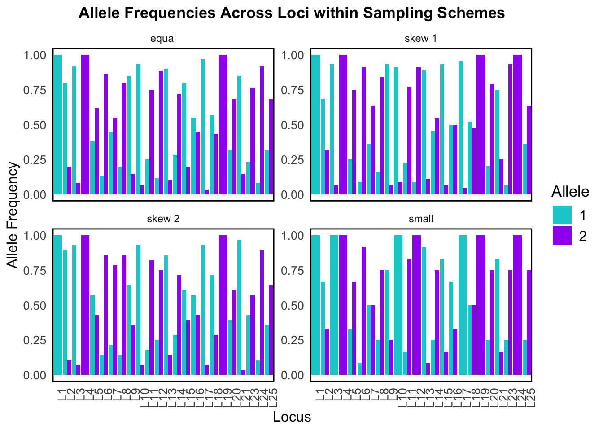
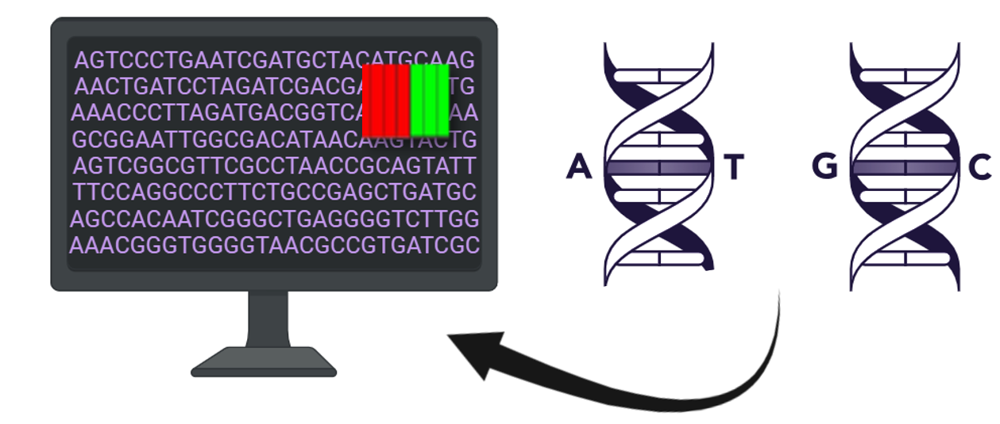

Exploratory Data Analysis of Simulated Population Genetic Data
Author
Bianca Tassi
Published
April 15, 2025
Background
What is Population Genetics and Why is it Important?

Population genetics is the study of how genetic traits are passed on and change in populations over time. Specifically, it combines genetics, principles of evolutionary biology, mathematics, and statistics to examine how allele frequencies change due to forces like mutation, natural selection, genetic drift and gene flow. Population genetics is important because it helps us understand how evolution works at the genetic level – It looks at how genes change over time in populations, not just individuals, and works to explain the mechanisms behind those changes.
Population genetic studies have applications in agriculture, conservation biology, pest management, as well as forensics. Understanding population genetics also helps in tracking the spread of disease genes and predicting genetic disorders in medical fields. A key contribution of the field of population genetics is in the analysis of population structure. Population structure analysis can help in predicting how species might respond to future environments and understand the consequences of anthropogenic environmental change, like climate change and habitat degradation.
And so, given the importance of performing population structure analysis, methods to do so are consistently being developed and refined.
PopCluster is a recently developed computer program that clusters individuals based on their genotype data in order to estimate population structure. This new clustering software works much faster than previous population structure analysis tools and can efficiently process large genomic datasets with high accuracy!
Data Simulation
The goal of my master’s project is to evaluate PopCluster’s new population genetic clustering method using simulated data.
The PopCluster software comes with an integrated simulation module where we can simulate genotype data before using this data in subsequent population structure analysis (also done using this software).

The PopCluster program (Wang, 2022)
In simulating data, we can control specific parameter values, such as the number of loci, the number of simulated populations, and the number of individuals per population.
Simulated genotype data is artificially generated genetic data that mimics real genotype data. Simulators use realistic population genetic models that reflect the biological processes and evolutionary events that shape real data. They are able to model mendelian inheritance, migration, and random mating to name a few. Simulators can also model sequencing/genotyping errors, and missing data which again works to imitate the messiness of real-world data collection. The PopCluster simulation module can apparently do all this and more, but this is still a relatively new program and there is not a lot of information available on its use.
Research Goals
For my exploratory data analysis in R, I want to test the quality of the data that is generated through this simulation module in PopCluster to make sure that it does mimic/model real biological genotype data. This is an important step for me to do before I actually use this module to generate the simulated data I will use in my master’s project!
To evaluate the quality of the simulated data, I will:
Verify the population structure of the data by performing a Principal Component Analysis (PCA) and a Discriminant Analysis of Principal Components (DAPC) to visualize genetic clusters
Estimate genetic differentiation and genetic diversity measurements for our simulated data
Investigate differences in genotype distributions at the locus and population level
Create For-Loops in R to randomly sample from the data under different sampling schemes and view changes in allele frequencies among the sampled individuals
About the Data
This dataset includes single nucleotide polymorphism (SNP) genotype information for 3 simulated populations. Each simulated population should consist of 20 diploid individuals genotyped at 25 biallelic SNP loci. Each row of this dataset should be a unique individual with corresponding genotype data (2 alleles per locus for 25 different loci). Each individual (and their IndividualID) belongs to one population (Population 1, 2, or 3 as denoted by the PopID). The loci are found in the columns, where for example, L1_A1 and L1_A2 are both the same locus (L1), and the first allele at the locus is denoted as A1, and the second allele at that locus is A2. The alleles at each loci take integer values 1 or 2, where individuals with both alleles 1 and 2 at a locus are heterozygotes, and individuals with genotypes 11 or 22 are considered homozygotes.
Let’s load the necessary packages for our analysis and read in our simulated dataset.
Looking at the structure of this starting dataset, we see that there are 61 entries/rows for individuals and 52 columns (50 loci columns and the additional IndivudalID and PopID columns).
Tidying the Data
The first data hygiene step we will carry out using our imported population genetic data is to check if there are any missing values (NAs).
We find that Locus 22 at both alleles (L22_A1 and L22_A2) has a lot of missing data for many of the genotyped individuals in our dataset. For our downstream analysis of the data and calculation of descriptive statistics we do not want to include loci with missing data, and so this locus will be removed.
The genotype information for 24 loci now remains per individual.
Next, we will check for any impossible values in our dataset.
We know that we simulated three populations, so the only values we expect to find in the PopID column are integer values 1, 2, or 3. We want to find any rows where this condition is violated.
There are no invalid values found in the PopID column.
We also know that our alleles only take values 1 or 2, so we want to find any individuals with invalid values for alleles at the genotyped loci and remove them.
Code
invalid_loci <- popdata_removeNA %>%select(IndividualID, starts_with("L")) %>%#Keep IndividualID for reference, select only locus columnsfilter(if_any(starts_with("L"), ~!. %in%c(1, 2))) #Check if values are not 1 or 2print(as_tibble(invalid_loci))
Two rows corresponding to individuals P1_12 and P3_19, contained impossible allele values and were removed from the dataset.
Lastly, we want to check for any duplicate entries in our data and then remove them. For our analysis, it is important that the individuals and their IndividualID names in our dataset are unique.
#Remove duplicates (keeping the first occurrence)popdata_clean <- popdata_valid %>%distinct(IndividualID, .keep_all =TRUE)
Individual P3_20 had two identical entries, so its duplicate information was removed from the dataset.
Our data is now clean!
Visualizing Genetic Clusters
Now that we have clean data to work with, we will use the adegenet package in R to visualize genetic clusters from the SNP data and verify that we have successfully simulated three genetic populations. In order to use this package, we must first perform a data transformation step and convert the genotype data into a genind object.
#Convert to matrix formatgeno_matrix <-as.matrix(popdata_clean)#Convert to genind objectgenind_obj <-df2genind(geno_matrix, ploidy =2, pop =as.factor(popdata_clean$PopID), sep ="_")
We can now perform a Principal Component Analysis (PCA) to assess population structure. PCAs can help us to visualize genetic variation between populations and show us how individuals in the data cluster based on genotype similarities.
Code
pca_result <-dudi.pca(tab(genind_obj), center =TRUE, scale =FALSE, scannf =FALSE, nf =2) #nf = 2, keeps the first two principal components#Extract PCA scorespca_scores <-as_tibble(pca_result$li) %>%mutate(PopID = popdata_clean$PopID)ggplot(pca_scores, aes(x = Axis1, y = Axis2, color =as.factor(PopID))) +geom_point(size =4) +labs(title ="Principal Component Analysis of SNP Data", x ="PC1", y ="PC2", color ="Population") +scale_color_manual(values =c("1"="blue", "2"="purple3", "3"="magenta1")) +theme_bw() +theme(plot.title =element_text(hjust =0.5, size =13, face ="bold"),legend.title =element_text(size =13),legend.text =element_text(size =12),axis.title =element_text(size =12),axis.text =element_text(size =10),panel.grid =element_blank(),panel.border =element_rect(size =1, color ="black", fill =NA),aspect.ratio =1 )

This PCA shows three separate genetic clusters or “populations” based on the genotypic data. Our simulated populations are shown to be genetically distinct and non-overlapping.
Using this transformed data, we can also perform a Discriminant Analysis of Principal Components (DAPC). A DAPC is also great for identifying genetic clusters but unlike a PCA, it clusters individuals based on genotype differences (maximizes differences between groups while reducing within-group variation).
DAPC uses the results of our previous PCA where two principal components were identified and retained. The number of discriminant functions retained is based on the number of populations in the dataset minus 1. Since our dataset has three populations (PopID = 1, 2, or 3), the maximum number of discriminant functions (DA axes) that can be retained is two.
Code
#Run DAPC with the optimal number of PCs = 2dapc_result <-dapc(genind_obj, n.pca =2, n.da =length(unique(popdata_clean$PopID))-1)scatter(dapc_result,col =c("blue", "purple3", "magenta1"), posi.da ="bottomleft", scree.pca =TRUE, posi.pca ="topleft")

This DAPC shows even better separation of our three populations than the PCA.
What we see in both the PCA and DAPC plots is what we expect from our simulated data – the PopCluster simulation module has generated three genetically distinct populations. This is therefore a successful quality analysis step of our simulated data!
Measuring Genetic Diversity
To calculate measurements of genetic diversity and perform other downstream population genetic analyses we need to further transform our data.
Specifically, we need to merge the columns that represent the same loci together. For example, we want to merge the columns for the first locus, L1_A1 and L1_A2, together to be one column called L1, and have all the genotype data also be merged together. So, if L1_A1 for one individual has a value of 1 and L1_A2 has a value of 1, they will be merged together as 11 (a homozygote).
We now have a further tidied dataset in a merged format with each locus represented as a single column with genotypes “11” and “22” being homozygotes, and individuals with the genoytype “12” at a locus being heterozygote. This tidy data set still has 58 individuals genotyped at 24 loci (but these loci now exist as singular columns).
Genetic Differentiation
Using this merged data set we can calculate the level of genetic differentiation between the three populations. This measurement is denoted by FST (fixation index) and is calculated using the hierfstat package in R.
We again must convert our tidy data into a new genind object to utilize the functions in this package.
We can then use a function in this package which calculates the overall FST and FIS (the inbreeding coefficient) values using a method called Weir and Cockerham’s estimate.
wc(genind_obj2)
$FST
[1] 0.2056415
$FIS
[1] 0.0004075013
This gives us an overall FST value of around 0.2, and a very low value for FIS (close to zero). This tells us that there is a high level of genetic differentiation across the three populations. Our simulated populations are highly genetically differentiatedfrom each other and there is little to no inbreeding occurring. Therefore, our simulated data accurately mimics possible real life population genetic data where populations are genetically distinct, and individuals are randomly mating within the populations.
The high level of genetic differentiation calculated between our simulated populations is also further proof that we have highly structured data as seen in our previous PCA and DAPC plots!
Observed Heterozygosity per Locus
Heterozygosity refers to the presence of different alleles at a specific locus within an individual. If an individual has two different alleles at a locus, they are heterozygous at that locus.
We can use the summary() function to calculate various population genetic descriptive statistics including the observed and expected heterozygosity values for each locus in our dataset.
diversity <-summary(genind_obj2)
In population genetic studies it is often important to check observed heterozygosity values in a dataset to understand if populations are experiencing loss of genetic diversity.
Specifically, low heterozygosity at a locus can indicate a loss of genetic diversity and could be associated with inbreeding, population bottlenecks, genetic drift, natural selection, or other evolutionary processes. A population with overall low heterozygosity may have less genetic variation to adapt to changing environmental conditions.
Code
locus_numbers <-setdiff(1:25, 22) #Generates 1-25, excluding 22 (no data point for the 22nd loci as this locus was removed from analysis due to missing data)popdata_diversity <-data.frame(Locus = locus_numbers, Hobs = diversity$Hobs)#Observed heterozygosity across all lociggplot(popdata_diversity, aes(x = Locus, y = Hobs)) +geom_point(color ="black", fill ="white", size =3, shape =21, stroke =1) +labs(title ="Observed Heterozygosity per Locus",x ="Loci Number",y ="Observed Heterozygosity") +scale_x_continuous(breaks =seq(1, 25, by =2), labels =seq(1, 25, by =2)) +theme_bw() +theme(plot.title =element_text(hjust =0.5, size =13, face ="bold"),legend.title =element_text(size =13),legend.text =element_text(size =12),axis.title =element_text(size =12),axis.text=element_text(size =10),panel.grid =element_blank(),panel.border =element_rect(size =1, color ="black", fill =NA))
This scatter plot above shows observed heterozygosity per locus, which tells us how much genetic diversity exists at each simulated SNP locus based on the proportion of heterozygotes.
In the absence of evolutionary forces, a plot of observed heterozygosity per locus should be relatively uniform. However, in real populations on the landscape, there are always evolutionary forces at work! So, a more scattered distribution (like what we see in our plot) is more representative of real data and suggests genetic differentiation among populations (which we know is true based on our above estimate of FST).
This plot shows a wide range of diversity across loci with observed heterozygosity ranging from 0 to ~0.5. Loci with high heterozygosity, like L5, L16, and L20, indicate a higher degree of genetic diversity. Loci with low heterozygosity, like L1, L4, and L19 (these loci have no heterozygosity), are far less genetically diverse.
Therefore, our simulated genetic data shows variable levels of genetic diversity across loci, and this variation is representative of what we see in real biological population genetic data.
Observed vs. Expected Heterozygosity
As discussed, observed heterozygosity represents the proportion of heterozygotes that are actually observed in the population for each locus. On the other hand, expected heterozygosity represents the proportion of heterozygotes that we would expect under Hardy-Weinberg Equilibrium (HWE). Hardy-Weinberg equilibrium is a principle stating that allele and genotype frequencies in a population remain constant from generation to generation in the absence of evolutionary influences like selection, mutation, migration, or genetic drift.
By comparing observed heterozygosity to what is expected, population geneticists can then identify deviations that might be caused by evolutionary forces or by the presence of population structure.
Code
popdata_function <-data.frame(Hobs = diversity$Hobs, Hexp = diversity$Hexp)#Expected heterozygosity as a function of observed heterozygosity per Locus (trend line is what is expected at Hardy-Weinberg equilibrium)ggplot(popdata_function, aes(x = Hobs, y = Hexp)) +geom_smooth(method ="lm", color ="purple3", se =FALSE) +geom_point(color ="black", fill ="white", size =3, shape =21, stroke =1) +labs(title ="Expected Heterozygosity vs. Observed Heterozygosity per Locus",x ="Observed Heterozygosity (Hobs)",y ="Expected Heterozygosity (Hexp)") +theme_bw() +theme(plot.title =element_text(hjust =0.5, size =13, face ="bold"),legend.title =element_text(size =13),legend.text =element_text(size =12),axis.title =element_text(size =12),axis.text=element_text(size =10),panel.grid =element_blank(),panel.border =element_rect(size =1, color ="black", fill =NA))
A plot of observed versus expected heterozygosity should ideally show a straight line with a slope of 1. This would indicate that the observed heterozygosity is consistent with what is expected under HWE, and that there are no significant deviations from expected genotype frequencies.
In our plot, we observe that the points roughly cluster around the positively corelated regression line, which indicates that our populations may be approximately in HWE.
Points that deviate below the line (where Hobs < Hexp), may be due to inbreeding, selection or population structure. Highly structured population may therefore have lower heterozygosity– We already know that our data is highly structured, so these deviations make sense. Points that deviate above the line (where Hobs > Hexp), could suggest the presence of outbreeding, where individuals are more likely to be heterozygous than expected thereby increasing genetic diversity.
Overall, the slight deviations that we observe in the data may indicate that evolutionary forces that disrupt Hardy-Weinberg equilibrium are acting on these populations, which is of course representative of real biological populations on the landscape!
Investigating Genotype Distributions
We need to first convert our tidy data from wide to long format for visualization of genotype frequencies and proportions.
#Convert data from wide to long formatpopdata_long <- popdata_tidy %>%pivot_longer(cols =starts_with("L"), names_to ="Locus", values_to ="Genotype")
Code
#Extract numeric part of locus names to ensure proper sortingpopdata_long2 <- popdata_long %>%mutate(Locus =factor(Locus, levels =paste0("L", 1:25)))#Count genotype frequencies per locusheatmap <- popdata_long2 %>%count(Locus, Genotype)ggplot(heatmap, aes(x = Genotype, y = Locus, fill = n)) +geom_tile() +scale_fill_gradient(low ="aliceblue", high ="blue4") +labs(title ="Genotype Frequencies Across Loci", x ="Genotype", y ="Locus") +theme_minimal() +theme(plot.title =element_text(hjust =0.5, size =13, face ="bold"),legend.title =element_text(size =13),legend.text =element_text(size =12),axis.title =element_text(size =12),axis.text=element_text(size =10),panel.grid =element_blank(),panel.border =element_rect(size =1, color ="black", fill =NA),aspect.ratio=1 )
The above heat map visually represents the frequencies of the different genotypes across all loci, with color intensity indicating the relative abundance of each genotype. This allows us to detect patterns of variation and identify loci with higher heterozygosity (12 dominance) or homozygosity (11 or 22 dominance).
Some loci, like L1, L10, and L17, show high counts of the homozygote genotype 11, suggesting allele 1 is much more common at these loci. Other loci, like L4, L19, and L24, have high counts of genotype 22, suggesting allele 2 is dominant at these loci. Loci that have skewed genotype frequencies may suggest that they are under selection, or be linked to traits. L16 and L25 have a fair mix of all three genotypes. The genotype frequency variation seen across loci in our simulated data is representative of what we may observe in nature.
Code
#Count genotype occurrences per populationpopdata_freq <- popdata_long %>%count(PopID, Genotype) %>%group_by(PopID) %>%mutate(freq = n /sum(n)) #Convert to proportionggplot(popdata_freq, aes(x =factor(PopID), y = freq, fill = Genotype)) +geom_bar(stat ="identity") +labs(title ="Genotype Proportions by Population", x ="Population", y ="Proportion") +scale_fill_manual(values =c("11"="purple4", "12"="mediumpurple1", "22"="lightskyblue1")) +theme_bw() +theme(plot.title =element_text(hjust =0.5, size =13, face ="bold"),legend.title =element_text(size =13),legend.text =element_text(size =12),axis.title =element_text(size =12),axis.text=element_text(size =10),panel.grid =element_blank(),panel.border =element_rect(size =1, color ="black", fill =NA),aspect.ratio=1 )
This stacked bar plot above displays calculated genotype proportions at the population level. The proportion of each genotype (11, 12, or 22) is similar/ roughly equal across all three populations. There is a clear balance between the proportion of homozygotes and heterozygotes. Genotype 12 (heterozygous genotype) makes up around 25–35% in each population, while the homozygote genotypes 11 and 22 are also present and common in each population. This balance suggests no strong inbreeding is occurring within populations which is consistent with the inbreeding coefficient (FIS) we calculated previously. Since all three of the possible genotypes are present and the heterozygotes aren’t drastically low or high, this may also suggest that the populations are in HWE. These genotype distributions are largely what we would expect in real populations where there isn’t strong selection, inbreeding, or migration.
Random Sampling and Allele Frequencies
Population structure estimates using the PopCluster program are shown to be highly accurate even when samples from source populations are small or highly unbalanced in size. To test this for ourselves, part of my master’s project will involve performing random sampling from my simulated data before population structure analysis in the software.
I wanted to take the opportunity afforded to me through this EDA project to create the For-Loops in R to randomly sample from simulated data under four different sampling schemes.
The table below outlines the specific sample type and corresponding scheme for random sampling from our three simulated populations.

Small sampling
small_sample <-list() #Create an empty list to store sampled individuals#Loop through each population (1, 2, 3)for (pop inunique(popdata_tidy$PopID)) {#Filter dataset for the current population and sample 2 individuals sampled <- popdata_tidy %>%filter(PopID == pop) %>%sample_n(2) #Randomly select 2 individuals#Store result in the list small_sample[[as.character(pop)]] <- sampled}#Combine all sampled individuals into a single tibblescheme_small <-bind_rows(small_sample)
Equal sampling
Code
#Same process as small samplingequal_sample <-list()for (pop inunique(popdata_tidy$PopID)) { sampled2 <- popdata_tidy %>%filter(PopID == pop) %>%sample_n(10) #Randomly select 10 individuals equal_sample[[as.character(pop)]] <- sampled2}scheme_equal <-bind_rows(equal_sample)
Skewed sampling 1
We need an additional step to define specific sampling sizes for each population for our For-Loop code for the skewed sampling schemes.
#Define sampling sizes for each populationsampling_skew1 <-c("1"=10, "2"=10, "3"=2)skew1_sample <-list()#Loop through each population and sample the specified number of individualsfor (pop innames(sampling_skew1)) { sampled3 <- popdata_tidy %>%filter(PopID ==as.numeric(pop)) %>%sample_n(sampling_skew1[pop]) skew1_sample[[pop]] <- sampled3}scheme_skew1 <-bind_rows(skew1_sample)
Skewed sampling 2
Code
#Same process as the skew 1 sampling loopsampling_skew2 <-c("1"=2, "2"=2, "3"=10) #Different sampling sizes for skew 2 schemeskew2_sample <-list()for (pop innames(sampling_skew2)) { sampled4 <- popdata_tidy %>%filter(PopID ==as.numeric(pop)) %>%sample_n(sampling_skew2[pop]) skew2_sample[[pop]] <- sampled4}scheme_skew2 <-bind_rows(skew2_sample)
Now that we have done our random sampling from each of the simulated populations using For-Loops, we want to combine and then visualize the sampled individuals in a scrollable table format! It is also helpful for downstream data visualization for us to add a new column to this combined data to indicate the sampling type used to sample each individual.
Code
#Combine the sampled individuals and add scheme type columnscheme_small <- scheme_small %>%mutate(SamplingScheme ="small")scheme_equal <- scheme_equal %>%mutate(SamplingScheme ="equal")scheme_skew1 <- scheme_skew1 %>%mutate(SamplingScheme ="skew 1")scheme_skew2 <- scheme_skew2 %>%mutate(SamplingScheme ="skew 2")#Combine the results of each of the random sampling loopspopdata_schemes <-bind_rows(scheme_small, scheme_equal, scheme_skew1, scheme_skew2)#Create scrollable table to see all the sampled individuals at each of the sampling schemespaged_table(popdata_schemes)
Using this combined dataset of sampled individuals and their corresponding genotype information shown in the above table, we can visualize allele frequency differences based on the sampling scheme used to randomly sample the individuals.
Code
#Convert data from wide to long formatallele_data <- popdata_schemes %>%pivot_longer(cols =starts_with("L"), names_to ="Locus", values_to ="Genotype") %>%mutate(Allele1 =substr(Genotype, 1, 1),Allele2 =substr(Genotype, 2, 2)) %>%pivot_longer(cols =c("Allele1", "Allele2"), names_to ="AlleleType", values_to ="Allele") %>%group_by(SamplingScheme, Locus, Allele) %>%summarise(Frequency =n(), .groups ="drop")#Normalize frequencies within each sampling schemeallele_freq <- allele_data %>%group_by(SamplingScheme, Locus) %>%mutate(RelativeFreq = Frequency /sum(Frequency))allele_colors <-c("1"="darkturquoise", #Define allele colors"2"="purple")ggplot(allele_freq, aes(x = SamplingScheme, y = RelativeFreq, fill = Allele)) +stat_boxplot(geom ='errorbar') +geom_boxplot() +scale_fill_manual(values = allele_colors) +theme_minimal() +labs(title ="Distribution of Allele Frequencies Across Sampling Schemes",x ="Sampling Scheme", y ="Allele Frequency") +theme(plot.title =element_text(hjust =0.5, size =13, face ="bold"),legend.title =element_text(size =13),legend.text =element_text(size =12),axis.title =element_text(size =12),axis.text=element_text(size =10),panel.grid =element_blank(),panel.border =element_rect(size =1, color ="black", fill =NA),axis.text.x =element_text(angle =45, hjust =1) )

This box plot shows how allele frequencies for the two possible alleles (1 and 2) vary across the different sampling schemes. It helps us understand how different ways of sampling a population affect the distribution of allele frequencies.
The equal sampling scheme gives the most stable and symmetrical results, and reflects random, unbiased sampling which is ideal for population genetics studies. Alleles 1 and 2 are seen to have roughly symmetrical distributions with median allele frequencies near 0.5.
Skew 1 and skew 2 still show a fairly broad range of allele frequencies, but the distributions start to shift away from the median slightly, demonstrating some imbalance due to the skew in sampling. This reflects what happens when you oversample certain subpopulations or habitats in real data.
The small sampling shows the widest spread and most variability for allele frequency distribution among the sampling schemes, particularly for allele 2. This exemplifies how small sample sizes (sometimes caused by genetic drift in real population data) increase variance and reduce precision in estimating allele frequencies.
Code
allele_plot <- allele_data %>%group_by(SamplingScheme, Locus) %>%mutate(Proportion = Frequency /sum(Frequency))allele_plot$Locus <-factor(allele_plot$Locus, levels =paste0("L", 1:25))ggplot(allele_plot, aes(x = Locus, y = Proportion, fill = Allele)) +geom_bar(stat ="identity", position ="dodge") +facet_wrap(~SamplingScheme, scales ="free_y") +scale_fill_manual(values = allele_colors) +theme_minimal() +labs(title ="Allele Frequencies Across Loci within Sampling Schemes",x ="Locus", y ="Allele Frequency") +theme(plot.title =element_text(hjust =0.5, size =13, face ="bold"),legend.title =element_text(size =13),legend.text =element_text(size =12),axis.title =element_text(size =12),axis.text=element_text(size =10),panel.grid =element_blank(),panel.border =element_rect(size =1, color ="black", fill =NA),axis.text.x =element_text(angle =90, hjust =1))

This bar plot breaks down allele frequencies at individual loci across the four different sampling schemes. It’s essentially a zoomed-in look at what was summarized in the above box plot – but now we can see exactly which loci are affected.
In both visualizations we can see that sampling scheme strongly affects allele frequency estimates for our simulated data. Since population structure analysis uses these calculated allele frequencies, this would severely affect any downstream results!
Our simulated data also does a good job at modeling the sampling bias that we tend to observe in real data.
Conclusion
Overall, we were able to address all of the research goals for this exploratory data analysis. The quality of the data that is generated through this simulation module in PopClusterdoes mimic real-life genotype data and produces biologically meaningful estimates.
I feel confident in using the simulation module in PopCluster to generate the data to be analyzed in my master’s thesis. I now also have the For-Loop code created through this project to sample from my populations once they are simulated!

PopCluster is a great tool for the simulation of SNP data and population structure analysis
References
Goudet, J. (2005), hierfstat, a package for r to compute and test hierarchical F-statistics. Molecular Ecology Notes, 5: 184-186.
Jombart, T (2008). adegenet: a R package for the multivariate analysis of genetic markers. Bioinformatics, 24, 1403-1405.
Miller, J, Cullingham, C, Peery, R. (2020). The influence of a priori grouping on inference of genetic clusters: simulation study and literature review of the DAPC method. Heredity, 125:269–280.
Wang, J. (2022). Fast and accurate population admixture inference from genotype data from a few microsatellites to millions of SNPs. Heredity, 129(2), 79-92.
Yi, X, and Latch, E. (2021). Nonrandom missing data can bias Principal Component Analysis inference of population genetic structure. Molecular Ecology Resources, 22, 602–611.